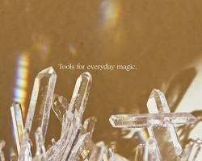

🔮 1. 水晶介紹：起源

從地球深處而來的療癒密碼。了解水晶的形成過程與悠久的歷史背景。
從地球深處而來的療癒密碼。了解水晶的形成過程與悠久的歷史背景。

了解白水晶、紫水晶、粉晶等主流水晶的獨特特徵，從色彩中尋找共鳴。

找到平衡身心、提升運勢的能量石，發揮在情感穩定與財富吸引上的功效。

教導您如何根據個人直覺、生命靈數或星座，挑選最適合自己的能量夥伴。

介紹月光淨化、晶洞充電等多種方式，教您如何維持水晶的純淨能量。

瀏覽精心設計的手作飾品、高品質原礦收藏或獨家的能量療癒課程。

整理了入門者最常詢問的迷思，從科學到神祕學，為您一一解惑。

與我們分享你的水晶能量故事，看看其他夥伴如何與水晶共同成長。

深入淺出的專欄文章，探索更多關於能量、色彩與心靈的專業知識。